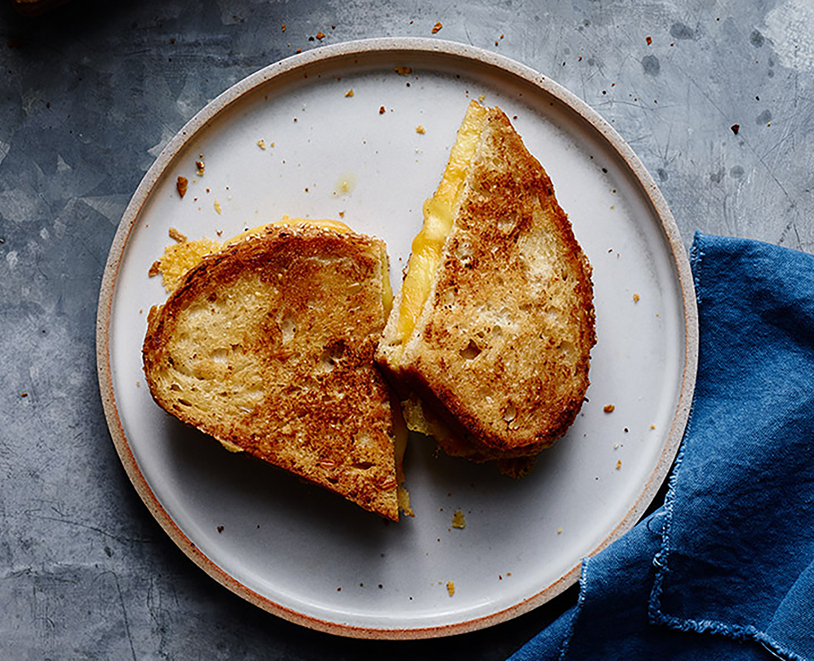

Grilled Cheese

Cheezy Grilled Cheese
Oh so good! This takes the standard grilled cheese and kicks it up a notch. It all starts with two different cheeses and crispy bread. Simple BUTTASTY!!!
You cannot deny a childhood favorite. Dive into this grilled cheese and you'll be back to make more!
Ingredients
- Two slices of bread
- Generous Amounts of shreaded mozzerella and colby jack sheet (that can be a slice tho)
- 2 Tablespoon of butter
Steps
- Pre-heat A Pan on Your Stove Top on High
- Put 1 Tablespoon of butter for each side (2 in total)
- Once the Pan is hot, put a slice of buttered bread face down and turn the temp to Low
- Quickly add the shreaded mozzerella and LOTS OF IT
- Place the slice of Colby Jack on top and place the other buttered bread on top (butter facing up)
- Wait for the mozzerella to start to melt and flip the grilled cheese over. You should have a nice golden brown crust on top. If not, we will repeat this process again but not right now
- Wait 4-5 mins and check the bread on the bottom of the pan. If its golden Brown, flip it again
- Wait another 1-2 mins and flip it again.
- Turn Off the HeatPut that grilled cheese on a plate and cut it diagonally. It tasts better when cut at an angle.